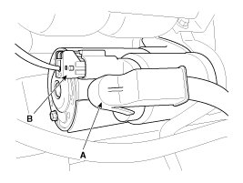
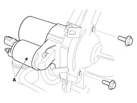

Starter - With ISG (Idle Stop & Go) System
Removal
1. Disconnect the battery negative (-) cable.
2. Remove the air duct and air cleaner assembly.
3. Disconnect the starter cable (A) from the B terminal on the solenoid then disconnect the connector (B) from the S terminal.
Tighting torque :
9.8 - 11.8 N.m (1.0 - 1.2 kgf.m, 7.2 - 8.7 lb-ft)

4. Remove the 2 bolts holding the starter, then remove the starter (A).
Tighting torque :
49.0 - 63.7 N.m (5.0 - 6.5 kgf.m, 36.2 - 47.0 lb-ft)

Installation
1. Install in the reverse of removal.